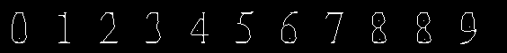
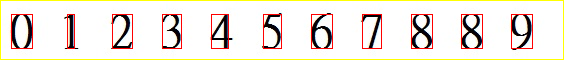

TextDetection4Ways reading digits from four quadrants
No OCR library: the digits are found with projections and recognised by how their ink is spread over four quadrants.
1
Input
TEST.jpg, read again on every pass of the main loop.
2
Strokes
Grey minus an erosion with an octagon, a threshold at max − range / 3, then a flood fill from the corner, inverted.
window flood_inv

3
The text line
Row projection: the longest run of rows with at least half the average ink. Shown after one thinning pass.
window maxColRoi
4
The characters
Column projection: runs of columns with 3+ ink pixels, wider than 5, become boxes.
window roi

5
Match the quadrants
Each box is cut into four. The share of ink in each quadrant is compared with
0.txt … 9.txt; 3 of 4 within ±0.04 counts as a match.0.270.210.290.23
0.txt 0.27 0.21 0.29 0.23
8.txt 0.27 0.18 0.29 0.26
9.txt 0.33 0.34 0.12 0.21
one line of four shares per template
8.txt 0.27 0.18 0.29 0.26
9.txt 0.33 0.34 0.12 0.21
one line of four shares per template
6
Printed result
The digit with the most matching template lines wins.
8 of 11right
Why 8 becomes 0: the templates for 0 and 8 are almost the same, and there is only one template line per digit.
HandWrite/ has ten per digit, but the program does not read it.Never stops by itself: the main loop reads
TEST.jpg again after every key press, and the templates are read by re-opening stdin with freopen.